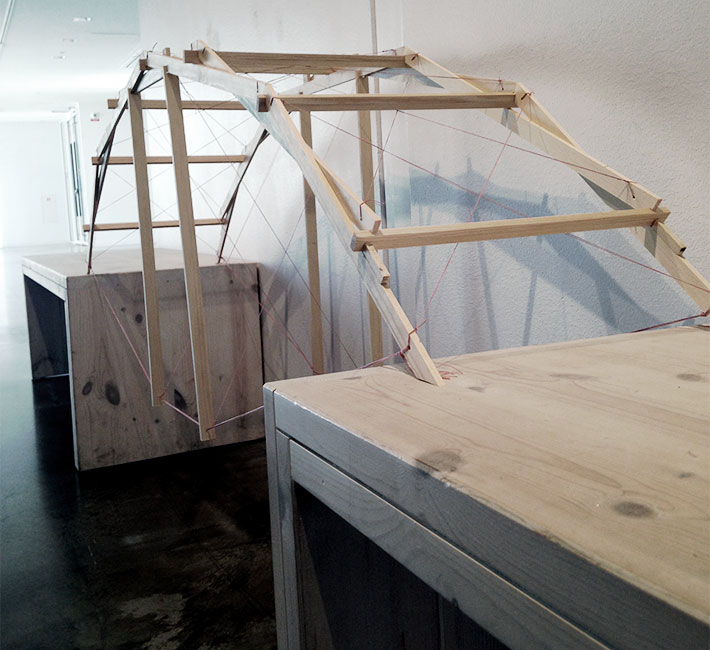

Umeå School of Architecture
8th semester/spring 2015
Optimizing structures
Da Vinci 2.0
In this workshop we were tasked with creating a bridge that should span 1,5 meters. Our provided material was small wooden sticks, some string and paper. My group were inspired by Leonardo Da Vinci’s self supporting bridge making a bridge with no joints, only wooden connections. We also added struts and some string for more support. In the end the competition was to test how effective each group's bridge were: the weight it could take divided by the weight of the bridge. Our bridge could take 23,1 kg, 31 times its own weight!
Group members
Anna Carlsson, Lars Huser, Therese Hägglund and Kataraina Jensen
